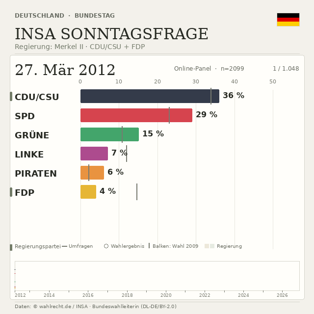

Both exports show all 1,036 poll snapshots. A violet stroke identifies government parties; source and copyright credits remain visible throughout.
Animated GIF
3.6 MB
Portable looping image for posts that accept GIF uploads.
MP4 companion
1.0 MBThe same frames in a smaller video file for platforms that prefer video.
60 seconds · 640 × 640 · 1,036 frames · Data: © wahlrecht.de / INSA · Additional database: © dawum.de (ODbL)